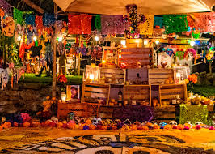

Tradiciones de la Ciudad


Algunas de las costumbres más representativas de la Ciudad de México incluyen la celebración del Día de Muertos, una tradición ancestral que honra a los difuntos con altares, flores, comida y veladoras. También destacan las fiestas patronales, que se celebran en distintas colonias con música, danza, comida y fuegos artificiales, mostrando el espíritu festivo de la comunidad. En el ámbito religioso, una de las peregrinaciones más importantes es la que se realiza en honor a la Virgen de Guadalupe, patrona de México, donde millones de fieles visitan la Basílica el 12 de diciembre para rendirle homenaje con ofrendas, cantos y oraciones.